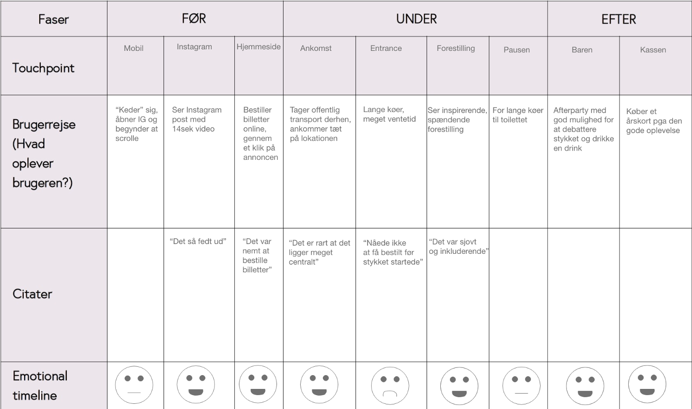
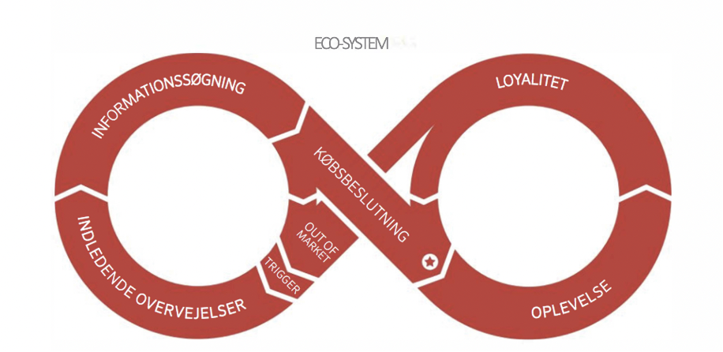
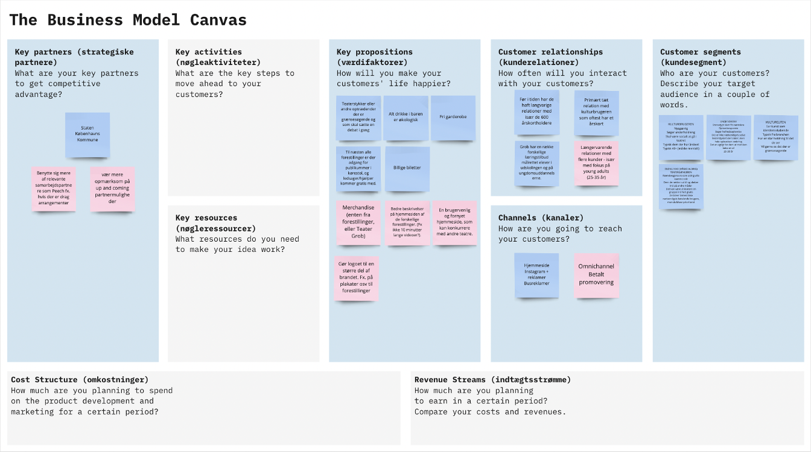

Processen
Research
Interview Guide
Vores målgruppe Young Adults i alderen mellem 25 og 35 år, som har et forhold til Nørrebro. De er primært studerende eller nyuddannede.
Hvad vil vi have ud af det ?
- Grunde til at gå i teateret
- Grunde til ikke at gå i teateret
- Har prisen noget at gøre med det?
- Hvad er grunden til at du måske hellere vil gå til koncerter eller andet, i stedet for at gå i teateret
- Ville det inspirere dig til at gå mere i teatret, hvis Teater Grob var mere synlige på sociale medier? F.eks. på instagram, kampagner, facebook annoncer osv?
Interviews
Interview Asta
- 1. Jeg er sådan pænt awesome! haha. Jeg er 27 år gammel og bosat i Nordvest, og til dagligt studerer jeg, bruger tid med mine venner, strikker og chiller med min hund.
- 2. Jeg studerer til Konservator på det Kongelige Akademi, og arbejder deltid på Naturhistorisk Museum.
- 3. Forholdsvis ofte vil jeg mene. Og det er en god blanding af biografture, koncerter, museumsbesøg og teateret.
- 4. ….? Ved jeg ikke, jeg foretrækker faktisk ofte at tage i teatret når jeg har lyst til at kulturelle oplevelser. Synes hele atmosfæren og muligheden for at se noget som udspiller sig i nuet er super interessant og medrivende.
- 5. Ja. Cykler forbi teatret næsten hver dag, og elsker når facaden har skiftet farve. Har også set flere af de forestillinger som er blevet sat op.
- 6. Muligvis ja. Jeg er i hvert fald ofte opmærksom på hvad der foregår på det Kongelige Teater pga. reklamer gennem instagram, så tænker også jeg ville overveje Grob noget mere hvis det også var tilfældet.
- 7. Prisen, gode tilbud for unge og studerende er desværre en ret stor faktor når det kommer til valget af kulturelle oplevelser. Jeg vil meget gerne betale en høj entre når jeg er rimelig sikker på god kvalitet, men ofte kan høje priser afskrække mig for at afprøve nye ting.
- 8. Igen tror jeg primært det er prisen. (man kan godt fornemme jeg er fattig studerende hehe)
Interview Grob
Golden Circle
WHY ?
Elsker teater og vil få jer til at elske det (usp) Normalisere teater, give teater mere liv i københavnernes hjerte
HOW ?
Forskellige forestillinger (muligheder til at vælge), så billigt som muligt (årskort), inclusive, tager sig af hvad brugerne vil/tænker osv
WHAT ?s
Teaterforestillinger og event
Empathy Map
Størstedel af målgruppe muligvis E2 Ung Andel (bor mange af i området). Dette er konkluderet ud fra at søge på adresser i området på conzoom.
Who are we empathizing with ?
Folk mellem 25-35 år, bor på nørrebro (Veluddannede i andelslejligheder) Studerende eller nyuddannede Højt kulturforbrug Under-, middel- og arbejderklassen Indkomst under gennemsnittet Største andel under 60 år uden børn Mere end 15% af Danmarks befolkning
What do they need to do ?
Tage i teateret Fortælle venner og bekendte om deres oplevelse, og hive nye folk med Få en god oplevelse
What do they see ?
Aktive på de sociale medier (facebook, sikkert instagram, e-mail) Internettet giver mange fordele og foretager e-handel Gruppe 16, tema 08 6 Ser nyheder, serier og film on-demand (netflix?) Følger med i politik, kultur og nyheder Dagblade og lokalaviser læses meget sjældent Magasiner: Where2go, soundvenue, ellers GAFFA og cover.
What do they say ?
“Synes hele atmosfæren og muligheden for at se noget som udspiller sig i nuet er super interessant og medrivende.”
“Prisen, gode tilbud for unge og studerende er desværre en ret stor faktor når det kommer til valget af kulturelle oplevelser.”
What do they hear ?
Radio: P3 og P4/DR regional Følger med i nyheder og interesserer sig for politik
What do they think and feel ?
Pains
Ventetid, besværlige sites, lange køer, for lille udvalg, for trang plads
Gains
Sjove oplevelser, lette og smertefrie bestillinger, parkeringspladser nok, god service
Personas
Andreas
- Bor på Nørrebro (i 6 år), nørrebrogade (oprindeligt fra provinsen)
- 30 år
- Nybagte far Forlovet (hun friede til ham) Atheist
- studerede på DTU CEO i en mindre selv opstartet dansk firma med fokus på grøn energi (Firmaet er self. boomet hurtigt her i KBH)
- Dyre barnevogn Elsker naturvin på Pompette. r
- Kæresten er smykkedesigner på deltid.
- Facebook, instagram (dele ikke selv billeder), linkedin 1 time om dagen Følger Jesper Buch, Elon Musk og andre CEO types/business og hans kæreste Facebook : rotationsgrupper (tøj og børne gear)
- Drømmer om at give et godt liv til hans familie
- Han frygter at hans firma crashe
Rebecca
- Kvinde
- 26 år
- Nørrebro men kommer fra Iran Vokset op muslim men vokser fra det Hun er kommet “lidt for sent” i gang med sin uddannelse (i forhold til hvad der var passende i hendes familie) Søgt ind på pædagogik
- Kan ikke lide : den rigtige naturvin den rigtige fermenterede ret på Omar
- Elsker : god bøf på Bones eller en kebab på Durumbar. Kunst (tegning, maleri og neglekunst)
- Instagram og snapchat pinterest Live stories Hun følger kunstneriske negletechs og kunster, og hendes venner Hører podcasts
- Drømmer at blive kunstner
- Frygter at ende lige som sine forældrer, hun vil bryde mønstret i hendes familie
Brugerscenarie
Brugerrejse
Så
Så Vores kampagne video/post dukker op på et af brugeres sociale medier (youtube/instagram). Call to action fører dem til vores kampagnesite. Her bliver der skabt en interesse, og informationssøgningen begynder.
Høste
På kampagnesitet findes en konkurrence som indbyder til at købe et årskort. Måske vil man være interesseret i at se mere om, hvilke teatre og events, som Grob tilbyder. Derfor vil man blive ført videre til Grobs hovedside.
Udvikle
Kunden har nu købt i årskort og været i teatret (skriv noget mere der giver mening)
Business Model Canvas
Konkurrent analyse
- 1. Vega måske? Undersøg selvpromovering fra skuespillerne? strategier til at nå et bredere publikum
- 2. Mungo park -
- 3. Sort/hvid
- 4. Nørrebro teater
SWAT and TOWS
SWAT
Interne faktorer som de kan styre: Styrker og svagheder
Eksterne faktorer som de ikke kan styre: Muligheder og trusler
Styrker:
- Bedre priser end mange andre steder
- Socialt samvær i fokus
- Unikt: grænsesøgende, sanseligt teater
- Tiltrækker den yngre målgruppe
- "Opsigtsvækkende" stykker
- Lokationen
- Støttet af staten
Svagheder:
- Dårlige til at brande sig selv
- Minus samarbejde med relevante partnere
- Måske lidt for “alvorligt”
- Vigtigt: Beskrivelse af stykkerne, folk ved ikke hvad de går ind til
Muligheder:
- Teaterstykker på engelsk (?)
- Sjove, sociale events
- Samarbejde med eksterne, f.eks. peach (drag/deres forestilling kinky classics)
- Branding på SOME
Trusler:
- Netflix
- Endnu en nedlukning
- Mange andre teatre (sort/hvid, nørrebro teater, mungo park)
- Folk er måske ikke så meget i humør til alvorlige teaterstykker efter pandemien og med alt der sker, men vil måske hellere se noget sjovt hvis det er
- Færre går i teatret (?) https://iscene.dk/2021/04/15/dansk-teater-1-million-faerre-teaterbilletter-solgt/
- Folk "mangler nogen at følges med"
- Unge har tendens til at prioritere deres penge andetsteds (café, gå i byen osv)
- https://iscene.dk/2020/01/30/danskerne-har-talt-teater-er-vigtigt-for-os-og-samfundet/
- Corona har gjort at færre går i teatret
TOWS
vi har 0 her !!!!!!!!!!!!
Ide
SoMe plan
WHY ?
HOW ?
WHAT ?
Koncept
Step Outline - Dramaturgi
CTA - Call to action
Storyboard
Design
Fonts
Moodboard
Palette
Produktion
Plan ?
Storyboard men det er den anden navn de har givet det
Videoerne
Bare links til videoernes side